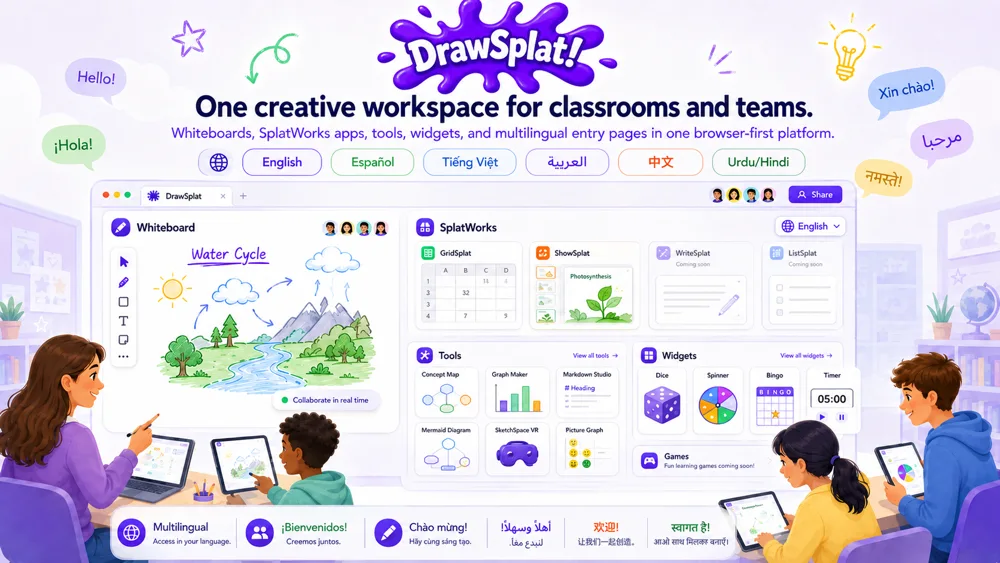
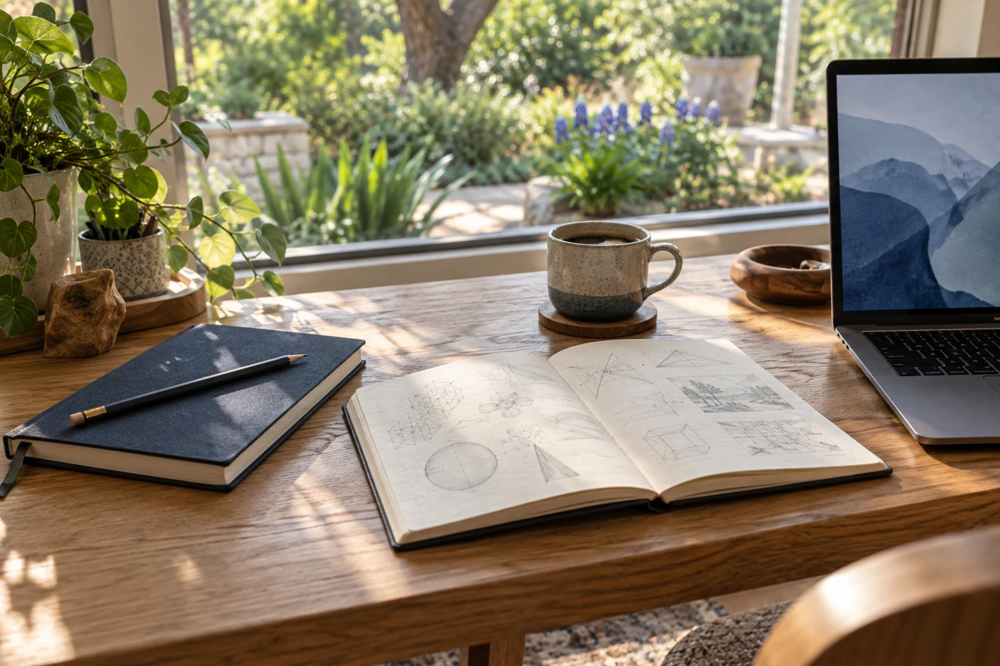
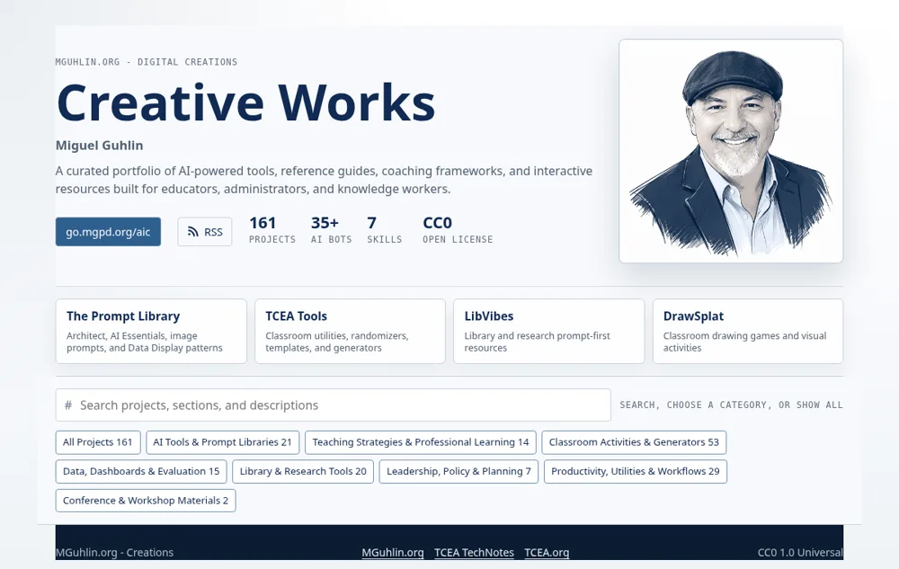
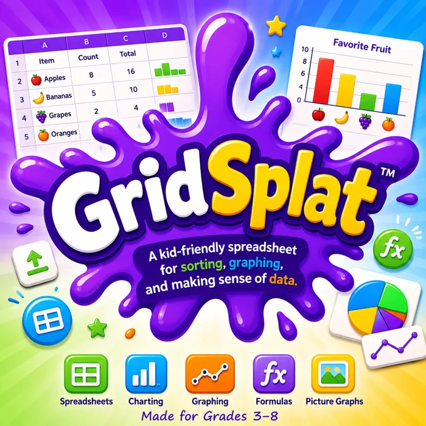
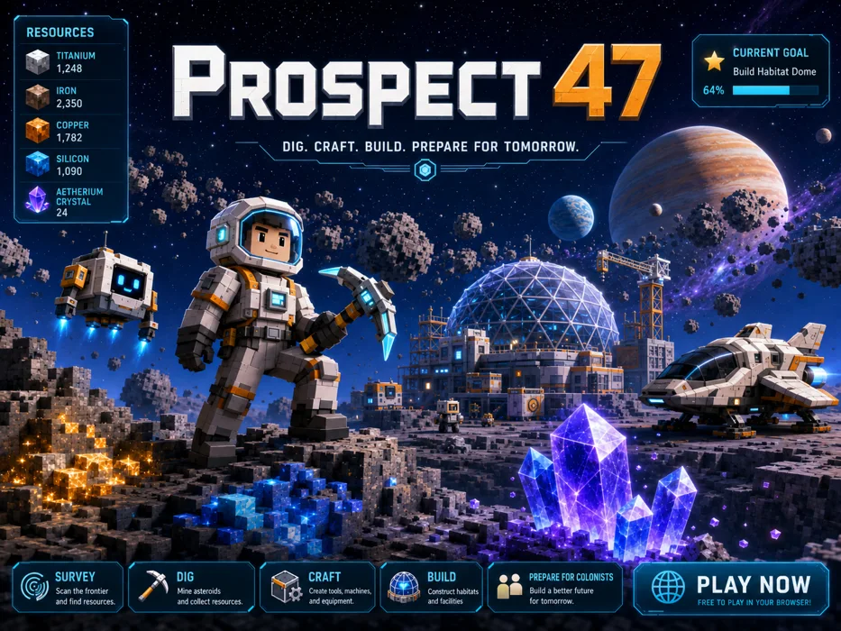
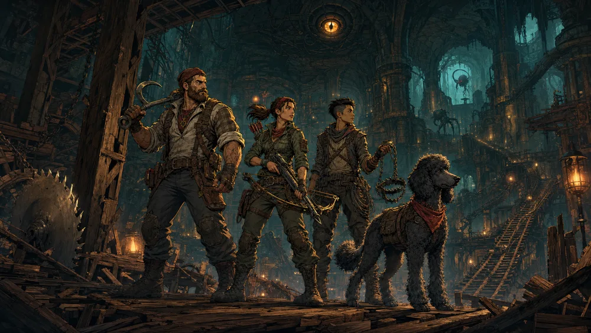
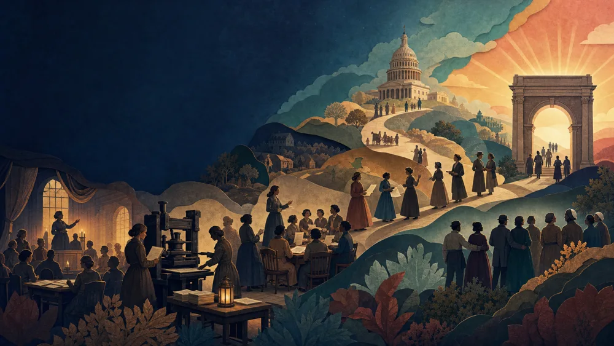
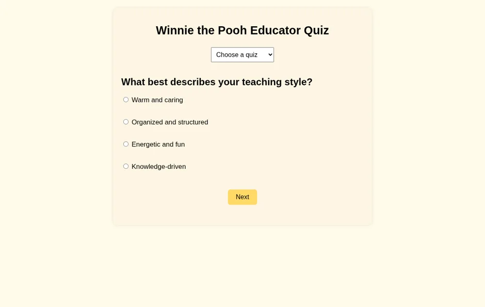
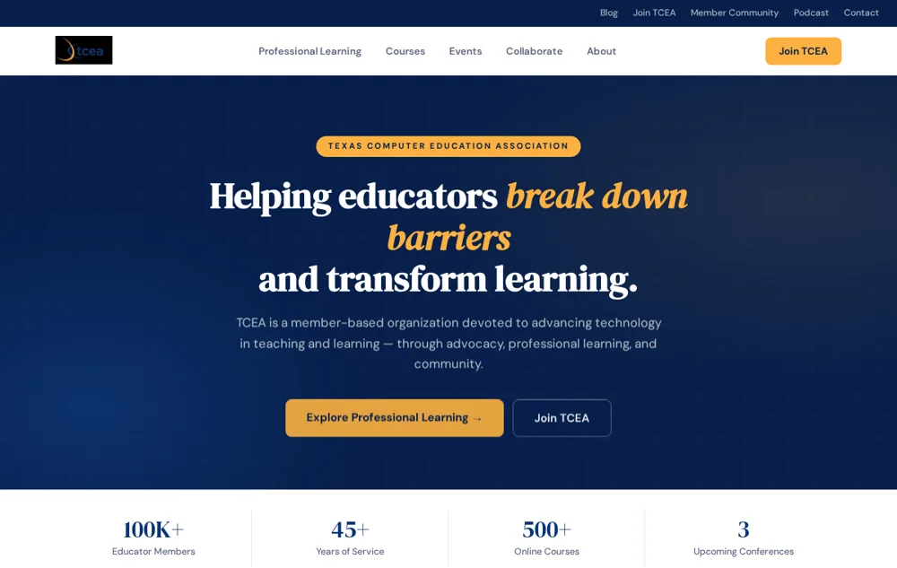

Start hereA creative workspace
DrawSplat
Whiteboards, video and audio editing, documents, diagrams, and classroom tools. A growing collection built around creating in your browser.
The creative side of Another Think Coming
Tools to make something. Resources to learn something. A few worlds to get lost in. Explore what I’m building at the intersection of education, technology, and play.

Pick a starting point. Follow your curiosity.

Start hereA creative workspace
Whiteboards, video and audio editing, documents, diagrams, and classroom tools. A growing collection built around creating in your browser.

Start hereThe wider collection
Explore the original collection of AI-assisted creations: practical tools, workshop resources, prompt builders, and small experiments worth trying.
The freedom to read
Learning rooms built around banned and challenged books. Explore literature, identity, history, and the questions that deserve a conversation.
NSPA conference collection
Conference sessions, AI guides, assessments, and practical resources for scholarship professionals considering how to use AI responsibly.
Your archive, close at hand
Read and search exported email offline. Open EML, MSG, MBOX, and PST files, preview attachments, and organize your archive with portable Windows and Linux downloads.

Make sense of data
A student-friendly spreadsheet for sorting data, using formulas, building charts, and exploring classroom activities.

Dig. Craft. Build.
An asteroid-mining and colony-building adventure. Gather resources, build a habitat, and prepare a small world for tomorrow.

An unlikely adventuring party
Three sawmill foremen and Moxie the standard poodle take on an original LitRPG action dungeon crawler.

Explore the unfinished story
An interactive journey through five turning points in voting rights, with primary sources and a teacher mode. Now hosted at mglearn.
New home · mglearn
Practice the conversation
Work through coaching scenarios using the Acknowledge, Reframe, Commit framework. Make space for a more productive next conversation.
Design for every learner
Coaching resources grounded in Universal Design for Learning. Explore ways to support learner variability and more inclusive instruction.
Now in Creations
A moment for reflection
A self-assessment for reflecting on emotional intelligence across key domains. Use your profile as a starting point for personal growth.

A lighter kind of discovery
Playful personality quizzes inspired by familiar fictional characters, beginning with a Winnie the Pooh educator quiz.

A visual prototype
An experimental TCEA website concept created with AI assistance. A design demonstration, not the official TCEA website.
Unofficial concept
Try a different word or explore the full collection.
A note from the maker
I’m Miguel Guhlin—an educator, writer, and maker. These projects grow out of questions about learning, creative work, and what we can build with a little curiosity and the help of AI.
This is the front door to my active GitHub Pages projects. For the writing behind the work, visit Another Think Coming.